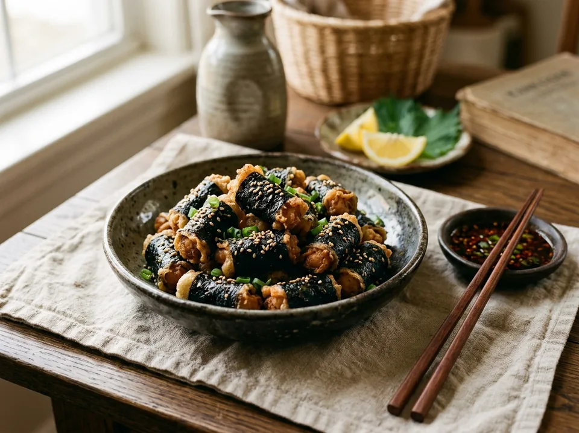

Основные блюда · 15-20 мин
«Японские семечки» в нори
Хрустящие мини-трубочки из водорослей нори с сочной начинкой из куриного фарша, зеленого лука, чеснока и кунжутного масла. 77 г белка и почти ноль углеводов!
К ингредиентам
Ингредиенты · 2 порций
- Куриный фарш (из филе грудки / нежирный) — 300 г
- Листы нори — 3-4 шт. (~10 г)
- Зелёный лук — небольшой пучок (~20 г)
- Чеснок — 2 зубчика (~8 г)
- Кунжутное масло (или альтернативы) — 1 ст. л. (замены в шаге 1)
- Яичный желток — 1 шт. (для смазывания и склейки нори)
- Семена кунжута — 5 г (для посыпки)
- Растительное масло в спрее — пару пшиков (~2 г)
- Соль, чёрный молотый перец — по вкусу
- Любимый соус (сырный, спайси или кисло-сладкий) — для подачи по вкусу
Пищевая ценность
На 100 г: 182.4 ккал · Б 25 г · Ж 8 г · У 2.3 г
Шаг за шагом
Подготовка куриного фарша и ароматных добавок
Мелко нарежьте зеленый лук и порубите или пропустите через пресс 2 зубчика чеснока. В глубокую миску положите 300 г куриного фарша, добавьте лук, чеснок, соль, черный перец по вкусу и влейте 1 столовую ложку кунжутного масла.
💡 Чем заменить кунжутное масло, если его нет:
• Вариант с соевым соусом: 1 ч. л. обычного растительного масла + 1 ст. л. соевого соуса (в этом случае обычной соли добавьте чуть меньше). Дает яркий азиатский вкус умами.
• Лайт-вариант без масла: 1–1.5 ст. л. ледяной воды или 1 ст. л. соевого соуса без масла. Хорошо вымесите фарш — мясо удержит влагу и останется сочным внутри даже без капли масла.Тщательно перемешайте фарш до плотной однородной массы.
Формирование полосок
Для удобства и ровной формы переложите фарш в кулинарный мешок (или плотный пакетик со срезанным уголком). Лист нори разрежьте пополам. Вдоль длинного края полоски нори выдавите аккуратную полоску фарша толщиной с палец.
Сворачивание и нарезка
Оставшуюся свободную часть листа нори смажьте взбитым яичным желтком с помощью кисти — желток намертво склеит шов и придаст золотистый блеск. Плотно сверните нори с фаршем в ровную длинную трубочку. Кулинарными ножницами разрежьте каждую получившуюся трубочку на 4 равные части.
Подготовка к запеканию
Выложите трубочки на решетку аэрогриля (или на противень, застеленный пергаментом). Слегка сбрызните растительным маслом из спрея и посыпьте семенами кунжута.
Запекание до хрустящей корочки
В аэрогриле: запекайте при 200 °C примерно 10 минут, пару раз встряхнув корзину для идеального равномерного хруста.
В духовке: запекайте при 200 °C около 10–12 минут. Подавайте горячими с любимым сырным, спайси или кисло-сладким соусом!
Другие варианты
Большая партия на 1,8 кг фарша (без кунжута и кунжутного масла)
- Фарш «Петелинка Премиум» из филе грудки — 1800 г (4 пачки по 450 г)
- Соевый соус (вместо кунжутного масла) — 3 ст. л. (~45 мл)
- Листы нори — 18–24 шт. (~60 г / 2 пачки по 10 листов)
- Зелёный лук — 120 г (1 крупный пучок)
- Чеснок — 12 зубчиков (~48 г)
- Яичный желток — 1 шт. (~17 г, для смазывания и склейки нори)
- Растительное масло в спрее — ~12 г (по паре пшиков на каждую партию)
- Чёрный молотый перец (обычную соль можно не добавлять) — по вкусу
- Любимый соус (сырный, спайси или кисло-сладкий) — для подачи по вкусу